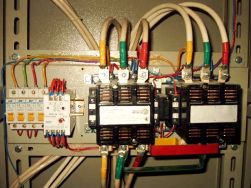
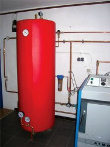
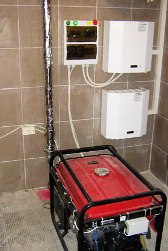
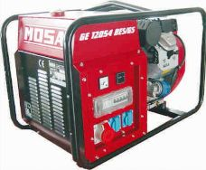

Об автономных системах электроснабжения частного дома


Проблема с электричеством в наших домах стала, к сожалению, уже обыденностью. Электричество могут отключить достаточно неожиданно, без всякого предупреждения. И представьте себе такую ситуацию…Зима. На улице морозец под – 20, вы идете домой, под ногами снег похрустывает… Приходите домой, а там… темень, в доме прохладно, неуютно … И тут вы вспоминаете, что для нормальной, постоянной работы вашего газового котла требуется постоянное, бесперебойное электроснабжение.
В этой небольшой статье мы попробуем разобраться, как же избежать ситуаций, чтобы не остаться без тепла, чтобы котел ваш функционировал на "пять с плюсом".
Итак, если у Вас автономное отопление, то уже на стадии монтажных работ необходимо было предусмотреть автономное энергообеспечения самых важных участков вашего дома. Система отопления без сомнения является номером один в этом списке.

Начнем с Источника Бесперебойного Питания (ИБП).
1) + ИБП не требует к себе постоянного внимания и контроля, достаточно лишь следить за состояние батарей.
2) + ИБП полностью автономная система, в случае отключения электроэнергии переключение на ИБП происходит моментально.
3) + Для ИБП не требуется много место, не требуется отдельного помещения.
4) + Стабильное напряжения и форма синусоиды на выходе ИБП.
5) – Ограниченное время работы. Время автономной работы напрямую зависит от емкости аккумуляторных батарей.
6) - Относительно высокая стоимость.
7) + Бесшумная работа.
Миниэлектростанции. Бензо- газо- или дизель генераторы.
1) – Генератор требует постоянного ТО, необходимо постоянно следить за остатком топлива, за уровнем масла.
2) + Применение автоматики (автозапуск) для генератора, дает возможность использование генератора в автономном режиме. См.также П.1
3) – Для генераторной установки необходимо оборудованное вентиляцией, желательно отдельно стоящее, утепленное помещение.

5) + Время автономной работы зависит лишь от количества топлива. При наличии дополнительного топлива, генератор может работать относительно долгое время.
6) + стоимость генераторной установки напрямую зависит от мощности, производителя, качества исполнения.
7) – Генераторная установка, даже при использовании глушителей, достаточно шумное устройство, что делает ее применение не слишком комфортным там, где нет возможности удалить ее от жилых помещений.
8) + При наличии достаточно мощной миниэлектростанции, 5-6 кВт, на нее можно «посадить» практически весь дом.
Вот небольшой список из плюсов и минусов двух альтернативных источников электроэнергии для автономного электроснабжения дома - ИБП и электрогенератора.
Если Вы живете в многоквартирном доме и у вас автономное отопление, правильным решением для вас станет использование ИБП на аккумуляторах. Как писалось выше, длительность автономной работы напрямую зависит от емкости аккумулятора и от нагрузки, которую вы подключите к ИБП.
Для того чтобы узнать сколько же проработает котел или другое оборудование от аккумулятора, можно воспользоваться следующей простой формулой:
Т = Uаб * Сак * X * h * Кр * 0.7 / Рн,
где Т – время автономной работы ИБП при отключении электричества, ч; Uаб – напряжение АКБ, В (в случае применения нескольких батарей- общее напряжение, если АКБ объединены последовательно); Сак – емкость аккумуляторной батареи, А* ч; X – количество аккумуляторов в батарее (АКБ которые объедены параллельно); h – КПД инвертора (0,7-0,9); Кр – коэффициент разряда 0,7 –0,9 (70%-90%); Рн – усредненная мощность нагрузки.
Для примера, возьмем АКБ емкостью 100-А/ч и нагрузку, которую потребляет средний котел-порядка 100 Вт. Применив формулу, мы узнаем примерное время автономной работы газового котла от ИБП: Tч = 12В*100А/ч*1*0.75*0.8*07 /100 Вт= 5.04 ч.
Итак, мы видим, что котел от одной АКБ емкостью 100 А/ч, проработает примерно 5 часов. Но реальное время автономной работы зависит от многих факторов: состояния АКБ, температуры окружающей среды, модели котла и т.д., и может колебаться по продолжительности работы, как в большую, так и в меньшую стороны.

Но, немного включив логику, подумаем, есть ли смысл «гонять» генератор ради одного котла? Генератор, в зависимости от мощности, потребляет в среднем от 1.5л/ч до 3л/ч. Умножив литры на деньги, получается немалая сумма.
Наиболее рациональным решением в данной ситуации будет совместное использование генераторной установки и ИБП на аккумуляторах. Существует много схематических решений, но об этом уже в следующей статье.
Сергей Серомашенко, http://electrik.info/